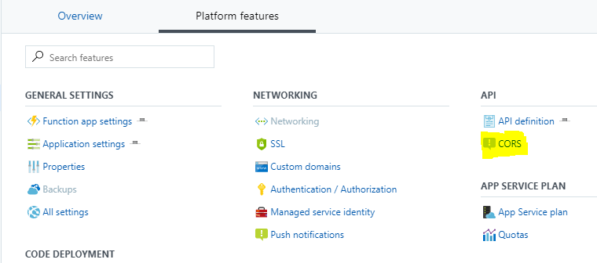

With Azure Functions you can quickly build simple web applications. In this example you learn how to create a simple photo gallery with just three little functions. We will use Azure Blob Storage to store the files and Azure Table Storage to save metadata. You can find the example at GitHub.
Creating thumbnails
Since we do not want use the original picture as a thumbnail, we will create a function that creates proper thumbnails. For this we can use the Image Resizer template that comes with Visual Studio. The code will look like this
public static class CreateThumbnail
{
[FunctionName("CreateThumbnail")]
public static void Run(
[BlobTrigger("images/{name}", Connection = "image-blob-connection")]Stream image,
[Blob("images-sm/{name}", FileAccess.Write, Connection = "image-blob-connection")]Stream imageSmall,
[Blob("images-md/{name}", FileAccess.Write, Connection = "image-blob-connection")]Stream imageMedium)
{
var imageBuilder = ImageBuilder.Current;
var size = imageDimensionsTable[ImageSize.Small];
imageBuilder.Build(
image, imageSmall,
new ResizeSettings(size.Item1, size.Item2, FitMode.Max, null), false);
image.Position = 0;
size = imageDimensionsTable[ImageSize.Medium];
imageBuilder.Build(
image, imageMedium,
new ResizeSettings(size.Item1, size.Item2, FitMode.Max, null), false);
}
public enum ImageSize
{
Small, Medium
}
private static Dictionary<ImageSize, Tuple<int, int>> imageDimensionsTable = new Dictionary<ImageSize, Tuple<int, int>>()
{
{ ImageSize.Small, Tuple.Create(268, 200) },
{ ImageSize.Medium, Tuple.Create(536, 400) }
};
}
This function will be triggered once a new file is placed in the Azure Storage Container named images (BlobTrigger). It will then create two thumbnails that are saved to the containers named images-sm and images-md. images-sm will contain small sized thumbnails, while images-md will contain medium sized thumbnails.
Save metadata
Next we will save metadata of the file into Azure Table Storage. The code for this function will look like this.
public static class SavePhoto
{
[FunctionName("SavePhoto")]
public static async Task Run(
//This parameter is needed, to get the name of the blob.
[BlobTrigger("images/{name}", Connection = "image-blob-connection")]Stream myBlob,
[Table("Photos", Connection = "photo-table-connection")]IAsyncCollector<Photo> photos,
string name)
{
var photo = new Photo() { Name = name };
photo.RowKey = Guid.NewGuid().ToString();
photo.PartitionKey = photo.RowKey.Substring(0, 1);
await photos.AddAsync(photo);
}
}
We again use the BlogTrigger to trigger the function and also use the TableAttribute to inject a Azure Table Storage table into an IAsynCollector. The IAsynCollector allows us to add new entries into the Photos table. For the moment we just store the filename. Each Azure Table Storage entry needs a RowKey and PartitionKey. For the RowKey we use a new guid, while for the PartitionKey we use the first character of the guid. There might be better partition keys, but for this example it is good enough.
Query the Table
Next we need a functions that queries and returns the photos from Azure Table Storage.
public static class GetPhotos
{
[FunctionName("GetPhotos")]
public static HttpResponseMessage Run(
[HttpTrigger(AuthorizationLevel.Anonymous, "get")]HttpRequestMessage req,
[Table("Photos", Connection = "photo-table-connection")]IQueryable<Photo> photos)
{
return req.CreateResponse(HttpStatusCode.OK, photos.ToList());
}
}
This time we use a HttpTrigger to trigger the function when ever a http get request to /api/getphotos is made. We again use the TableAttribute to inject a Azure Table Storage table but this time we will not use IAsyncCollector but IQueryable. IQuerable allows us to query the Photos table. In this example we just return all entires of the table.
We now have an API endpoint that we can query from our client application.
Storage Container Access Policy
By default containers are set to private (which is a good default setting!). To be able to retrieve the images via http we need to change the Container Access Policy to Blob instead of Private. You can change this via the Azure Portal or using the Azure Storage Explorer
CORS Settings
In order to use the API endpoint from a browser, we need to configure CORS settings on our function app. In Azure Portal navigate to your function app, click on Platform features and then on CORS. Here you can add URLs that are allowed to use the API endpoint.

If you run it local within Visual Studio you need to add the following line to the Debug application arguments of the project host start --cors *.
The client
I have build a simple Angular application which queries the API endpoint and displays the thumbnails. A click on the thumbnail opens the original image. You can run the client and the functions app local, using Angular CLI for the client and Visual Studio and Azure Storage Emulator for the functions app.

Conclusion
As you can see it is very easy to create a simple web application with very few lines of code using Azure Functions. There is no need to include other SDKs or APIs, since the Azure Functions SDK comes with a attributes that integrated other Azure service very easy.